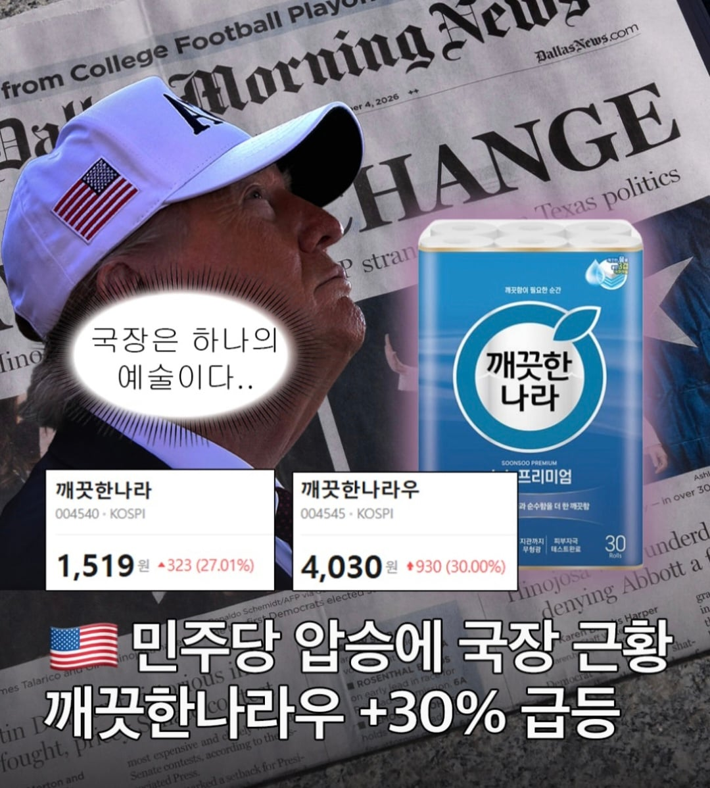

이 정도도 예측 못했으면서 한국주식한다고 꺼들먹거리는 호구들 없지?
네 제가 그 호구입니다

이 정도도 예측 못했으면서 한국주식한다고 꺼들먹거리는 호구들 없지?
네 제가 그 호구입니다
아니 이게 어떻게 연결된 건데???? 누가 좀 설명해줘!!!
설명이 됨? 이게 국장이다 ㅋㅋㅋ
아니 그래도 ㅋㅋㅋㅋㅋ
코로나 때 휴지 부족 사태가 있었는데, 그만큼 혼란해질 거라는 불안으로 휴지 판매량이 늘어날 것이다
같은 헛소리라도 있어야지 ㅋㅋㅋㅋㅋㅋ
그런 설명을 요구하는 자체가 국장에 맞지 않는거임 미장으로 떠나거라...
눈물 닦을 휴지 증가
민주당-태양광-친환경- 깨끗한휴지
그냥 끼워맞춘거제
나라가 깨끗해짐 - 깨끗한 나라 오름 이게 이해가 안됨? 국장할 자격이 없네
테마주냐고 ㅋㅋㅋ
저 pbr + 소비재 라서 오른듯?
노머고의 패배 > 폭군의 몰락 > 나라가 깨끗해짐 > 깨끗한 나라 이걸몰라?
깨끗한나라의 시그니처 색 = 민주당 도 있다
저 주식 자체가 하나의 투기장 같더라 차트 보니까 삐죽삐죽해 ㅋㅋ
느껴야 돈번다
이거보고 미장만 하기로 했다